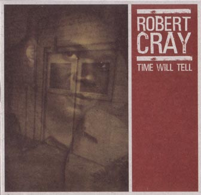

Time Will Tell

 Songs on the CD
Songs on the CD
- Survivor (Robert Cray)
- Up In The Sky (Jim Pugh)
- Back Door Slam (Bonnie Hayes and Kevin Hayes)
- I Didn't Know (Robert Cray)
- Your Pal (Jim Pugh)
- Lotta Lovin' (Robert Cray)
- What You Need (Good Man) (Bonnie Hayes and Kevin Hayes)
- Spare Some Love? (Robert Cray)
- Distant Shore (Jim Pugh)
- Time Makes Two (Robert Cray)
Other Time Will Tell Links
Back to my Cray page
Created: 07/17/03
By: rwhiffen
Mod: 07/17/03